ทฤษฎี · EvoSkill v2
EvoSkill v2 ในภาพเดียว: Agent 3 ตัว ปรับสกิลโดยไม่แตะโมเดล
สไลด์ชุดนี้เดินตามลำดับนี้: แนวคิด → การรันจริง → หลักฐาน
01_theory/README.md · ภาคปฏิบัติ (LAB) อยู่ใน สไลด์ของบทแนวคิดและโครงสร้าง
ทำไมการเขียนสกิลจึงช่วยได้ · ปรับอะไร ไม่ปรับอะไร · v2 เปลี่ยนอะไรจากรุ่นก่อน · ใครทำอะไร เมื่อไร
ข้อสังเกตตั้งต้น: Agent ที่ไม่มีสกิล พลาดแล้วมักพลาดโจทย์เดิมซ้ำ
ในโจทย์ที่พลาดอย่างน้อย 1 ครั้ง ส่วนใหญ่พลาดครบทั้ง 3 ครั้ง
ในโจทย์ที่พลาดอย่างน้อย 1 ครั้ง มีกี่ส่วนที่พลาดครบทั้ง 3 ครั้ง
พลาดเพราะขาดคำแนะนำ แก้ได้ด้วยการเขียนคำแนะนำให้ = สกิล
ขาดความสามารถ (โมเดลทำไม่เป็น)
แก้ได้ด้วย: เปลี่ยนหรือเทรนโมเดล
ขาดคำแนะนำ (ทำเป็น แต่ไม่รู้ว่างานนี้ต้องทำแบบใด)
แก้ได้ด้วย: เขียนคำแนะนำให้ = สกิล
ปรับสกิล = แก้ข้อความที่โมเดลอ่านตอนทำงาน โมเดลและ Agent Harness ไม่ถูกแตะ
สกิล 1 ตัว = โฟลเดอร์ 1 โฟลเดอร์ ที่ Agent เปิดอ่านทีละส่วน
สกิลในเปเปอร์นี้ ใช้นิยามของ Agent Skills (มาตรฐานเปิดที่ Claude Code, Codex และ GitHub Copilot ใช้):
1โฟลเดอร์ 1 โฟลเดอร์
1 สกิล
ใครอ่าน เมื่อไร: –
2description (ใน frontmatter ของ SKILL.md)
คำอธิบายสั้นว่าสกิลนี้ใช้เมื่อใด
ใครอ่าน เมื่อไร: Agent เห็น ตลอดเวลา
3เนื้อหาของ SKILL.md
คำแนะนำเต็ม
ใครอ่าน เมื่อไร: Agent เปิดอ่าน เมื่อ description ตรงกับงาน
4สคริปต์ (ถ้ามี)
โปรแกรมที่ Agent รันได้
ใครอ่าน เมื่อไร: เมื่อ SKILL.md บอกให้ใช้
คำถามของเปเปอร์: ควรปรับสกิลอย่างไรจึงดีที่สุด
คำถามของเปเปอร์จึงไม่ใช่ "สกิลช่วยได้หรือไม่" (งานก่อนหน้าตอบแล้ว) แต่คือ ควรปรับสกิลอย่างไรจึงดีที่สุด
1ผู้เขียนสกิลควรเป็นอะไร
คำตอบของ EvoSkill v2: Agent ที่มี bash
อ่านต่อ: ข้อ 11.1
2ผู้เขียนสกิลควรจำอะไรข้ามรอบ
คำตอบของ EvoSkill v2: ทุกอย่าง: เซสชันเดียวตลอดการรัน
อ่านต่อ: ข้อ 11.2
3ควรเห็นการทำโจทย์กี่ครั้งต่อโจทย์
คำตอบของ EvoSkill v2: หลายครั้ง (3)
อ่านต่อ: ข้อ 11.3
4ตัดสินอย่างไรว่าจะเก็บสกิลชุดใด
คำตอบของ EvoSkill v2: ไม่ตัดสิน: รับทุกชุด
อ่านต่อ: ข้อ 11.4
v2 เปลี่ยน 2 อย่าง: รวมผู้ปรับสกิลเป็น Evolver ตัวเดียว และเพิ่ม Benchmark Adaptor
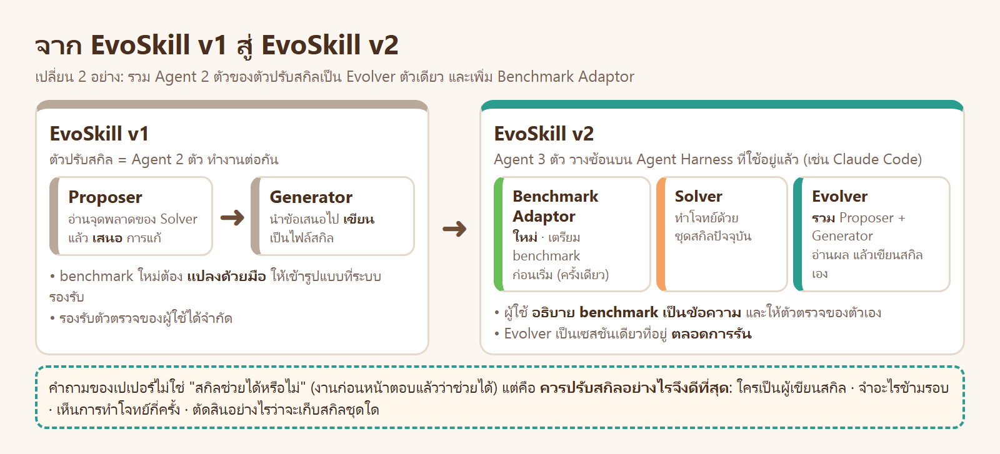
ชื่อเปเปอร์สรุปสองสิ่งที่เพิ่ม: from Benchmark Adaptation (มี Agent เตรียม benchmark) to a Stateful Evolver (ผู้เขียนสกิลมีสถานะ)
สิ่งที่เปลี่ยน 2 อย่าง และสิ่งที่คงไว้ 1 อย่าง
ผู้ปรับสกิล
EvoSkill v1: Agent 2 ตัว: Proposer วิเคราะห์จุดพลาดและเสนอ · Generator เขียนข้อเสนอเป็นไฟล์สกิล
EvoSkill v2: Agent ตัวเดียว: Evolver ทำทั้งสองอย่าง และอยู่ตลอดการรัน
การรับ benchmark ใหม่
EvoSkill v1: ต้องแปลงด้วยมือให้เข้ารูปแบบข้อมูลที่ระบบรองรับ · ตัวตรวจของผู้ใช้รองรับจำกัด
EvoSkill v2: Benchmark Adaptor อ่านคำอธิบายเป็นข้อความ แล้วเตรียมให้ · ผู้ใช้ให้ตัวตรวจของตัวเอง
สิ่งที่คงไว้
EvoSkill v1: เฉลย (Ground Truth) ให้เฉพาะผู้ปรับสกิลเห็น ไม่ให้ Solver เห็น
EvoSkill v2: เหมือนเดิม
อ่านจากบนลงล่าง = ลำดับเวลา: ก่อนการรัน → แต่ละ epoch → หลังการรัน

ในเครื่องมือ: 3 แถบ = 3 กลุ่มคำสั่งของสกิล evoskill: adapt · (base แล้ว turn ↔ rollout) · test
คำที่ใช้ตลอดสไลด์ชุดนี้: rollout · epoch · ตา · leg
rollout (หรือ episode)
Solver ทำโจทย์ 1 ข้อ 1 ครั้ง · บทก่อนเรียกว่า Trial
epoch
1 รอบของวงรอบ · epoch 0 = ยังไม่มีสกิล · epoch K ใช้ชุดสกิล skills_vK
ตา (turn)
Evolver ทำงาน 1 ครั้ง = ตอบข้อความ 1 ข้อความ · ตาที่ K เขียน skills_vK
leg
Solver ทำโจทย์ 1 ชุด ด้วยชุดสกิล 1 ชุด เช่น v1_val = Validation ด้วย skills_v1
Held-out
ชุด Test ที่ไม่เคยถูกใช้ระหว่างการรัน
pass@1 · pass@3 · all@3
rollout ที่ผ่าน · โจทย์ที่ผ่านอย่างน้อย 1 ใน 3 ครั้ง · โจทย์ที่ผ่านครบ 3 ครั้ง
Figure 1 ของเปเปอร์: สถาปัตยกรรมของ EvoSkill v2ภาพจากเปเปอร์
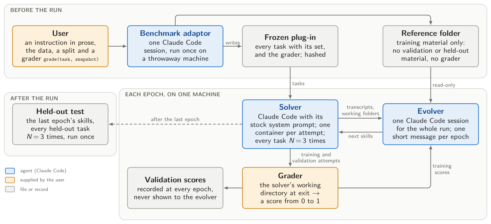
ภาพจากเปเปอร์ (Huang et al., 2026 · CC BY 4.0) · เทียบกับภาพก่อนหน้า: BEFORE THE RUN = แถบ "ก่อนการรัน" · EACH EPOCH, ON ONE MACHINE = แถบ "แต่ละ EPOCH" · AFTER THE RUN (อยู่ซ้ายล่าง มีเส้นประจาก Solver) = แถบ "หลังการรัน" วางไว้ล่างสุดตามลำดับเวลา
Benchmark Adaptor: ผู้ใช้อธิบายงานเป็นข้อความ แล้ว Agent เตรียมสนามทดลองให้

benchmark_plugin.py · Reference Folder reference/เข้า 3 อย่าง ออก 2 อย่าง แล้วโปรแกรมล็อกด้วย hash

ตัวตรวจ: ฟังก์ชัน grade(task, snapshot) คืนคะแนน 0 ถึง 1 · snapshot = โฟลเดอร์ทำงานของ Solver ตอนจบ · คลิกภาพเพื่อขยาย
กติกาของ Reference Folder: ต้องไม่มีของ Validation · Test · ตัวตรวจ
Plug-in benchmark_plugin.py
คืออะไร: โมดูล Python ที่มีฟังก์ชันเดียว list_tasks(root) คืนโจทย์ทุกข้อ พร้อมชุดของมัน และค่าที่ตัวตรวจอ่าน
กติกา: อ่านได้เฉพาะไฟล์ใต้ data root · ใช้ได้เฉพาะ standard library · ห้ามรันตัวตรวจ ห้ามใช้เครือข่าย
Reference Folder reference/
คืออะไร: ทุกอย่างที่ผู้ใช้ส่งมาและ Evolver ใช้ได้
กติกา: ต้องไม่มี ของชุด Validation · ของชุด Test · โค้ดหรือคำอธิบายของตัวตรวจ
คำสั่งของผู้ใช้กำหนดว่า Evolver เห็นอะไร: บทนี้ทำตามเปเปอร์ทั้ง 2 แบบ
คำสั่งของผู้ใช้เป็นตัวกำหนดว่า Evolver เห็นอะไร เปเปอร์ทดลอง 2 แบบ และบทนี้ทำตามทั้งสองแบบ
Fine-grained Ground Truth
Reference Folder มีอะไร: ข้อมูลของชุด Training รวมเฉลย
ของบทนี้: instruction.md → การรัน e1
Pass or Fail Only
Reference Folder มีอะไร: ข้อมูลของชุด Training ไม่มีเฉลย · Evolver เหลือแค่คะแนน
ของบทนี้: instruction_score_only.md → การรัน p1
ผลจริงของบทนี้ (e1): Benchmark Adaptor แบ่งชุดตรงกับผู้ใช้ และไม่พบการรั่วผลจริง runs/e1
split.json ของผู้ใช้reference/split.json ลง reference/ เพราะไฟล์นั้นมีชื่อโจทย์ของ Validation และ Test · ทดสอบ plug-in และค้นหาการรั่วใน reference/ เองก่อนจบSolver: เห็น description ของสกิลตลอดเวลา และเปิดเนื้อหาเต็มเมื่อตรงกับงาน
description ของสกิลทุกตัวอยู่ในบริบทตลอด · เนื้อหาเต็มถูกโหลดเมื่อ description ตรงกับงานdescription ตัดสินว่าสกิลจะถูกเปิดหรือไม่ จึงถูกปรับได้เช่นเดียวกับเนื้อหา
ผลที่ตามมา: description ตัดสินว่าสกิลจะถูกเปิดหรือไม่ มันจึงเป็นส่วนที่ ถูกปรับได้ เช่นเดียวกับเนื้อหา · สกิลที่เนื้อหาดีแต่ description ไม่ตรงกับงาน จะไม่ถูกอ่าน
description ที่ Evolver ของเราเขียนจริง (e1 · skills_v3 · เป็นสกิลตัวเดียว baankafe-solve ตั้งแต่ตาแรก):
name: baankafe-solve
description: ใช้ทุกครั้งที่โจทย์ให้เขียนฟังก์ชันคิดเงิน/คิดราคา/ค่าส่ง/เงินคืน/หารบิล ของร้าน BaanKafe ลงใน solve.py
(หน่วยสตางค์ ผลเป็นจำนวนเต็ม) — มีขั้นตอน กติกาปัดเศษ การตรวจ input (ValueError)
และนโยบายประจำร้านที่โจทย์มักไม่ได้เขียนไว้ แต่เทสต์ซ่อนตรวจEvolver = Claude Code 1 เซสชัน ที่อยู่ตั้งแต่ epoch แรกถึง epoch สุดท้าย
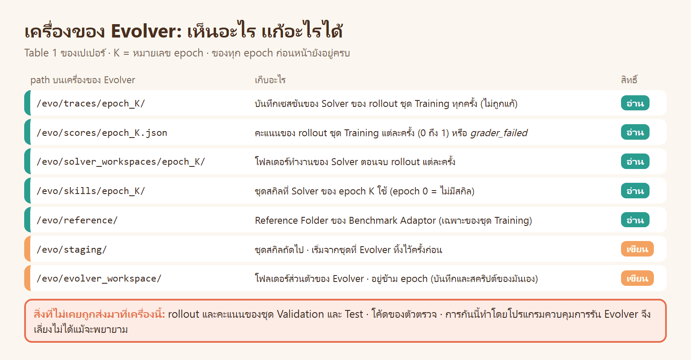
สิ่งที่อยู่บนเครื่องของ Evolver (Table 1 ของเปเปอร์) · ป้าย อ่าน = หลักฐานและประวัติ · ป้าย เขียน = งานที่กำลังเขียนและความจำส่วนตัว
Evolver ได้รับ 3 อย่าง และข้อความประจำ epoch มีไม่กี่บรรทัด
1system prompt
ของ Claude Code เอง + ข้อความต่อท้าย 1 ชุด: บอกบทบาท เป้าหมาย และแผนที่ของโฟลเดอร์
ส่งเมื่อไร: ชุดเดียวกันตลอดการรัน
2ข้อความประจำ epoch
สั้น ๆ: เวลาปัจจุบัน · เส้นตาย · หมายเลข epoch · "วิเคราะห์ rollout วินิจฉัยจุดพลาดที่สกิลแก้ได้ แล้วเขียน skills_vK"
ส่งเมื่อไร: 1 ข้อความต่อ epoch
3เครื่องมือ
ทุกอย่างของ Claude Code: bash · อ่านเขียนไฟล์ · subagent (ปิดการค้นเว็บ)
ส่งเมื่อไร: –
ข้อความประจำ epoch ที่ส่งจริงในบทนี้ (e1 ตาที่ 1 · message.md):
เวลาตอนนี้ 2026-11-14 22:46 UTC · เส้นตายของตานี้ 2026-11-14 23:16 UTC เมื่อถึงเส้นตาย สิ่งที่อยู่ใน `/evo/staging/`
จะถูกนำไปใช้ทันทีตามสภาพขณะนั้น · นี่คือ epoch 1 · ผลการทำโจทย์รอบล่าสุดของ Solver อยู่ใน `/evo` แล้ว
ขอให้วิเคราะห์ rollout เหล่านั้น วินิจฉัยว่า Solver พลาดตรงไหนที่สกิลช่วยแก้ได้ แล้วเขียนชุดสกิล `skills_v1` ลงใน `/evo/staging/`บนเครื่องของ Evolver มีโฟลเดอร์ 5 กลุ่ม
1หลักฐาน
traces/ · scores/ · solver_workspaces/
รู้ว่า Solver ทำอะไร ได้ผลงานอะไร และได้กี่คะแนน
2ประวัติของสกิล
skills/epoch_K/
รู้ว่า epoch K ใช้สกิลชุดใด จึงเทียบ "สกิลชุดนี้ → คะแนนเท่านี้" ย้อนหลังได้ทุก epoch
3ความรู้ของ benchmark
reference/
สิ่งที่ Benchmark Adaptor เก็บไว้ให้ (ขั้น 5)
4งานที่กำลังเขียน
staging/
ชุดสกิลถัดไป · เริ่มจากชุดเดิม ถ้าไม่แก้ Solver จะใช้ชุดเดิม
5ความจำส่วนตัว
evolver_workspace/
บันทึกและสคริปต์ของ Evolver เอง
ความจำของ Evolver มี 3 ชั้น: บริบทของเซสชันหายได้ สิ่งที่เขียนลงไฟล์ไม่หาย
1บริบทของเซสชัน
เก็บอะไร: การวิเคราะห์และเหตุผลของตาก่อน ๆ
หายเมื่อไร: บางส่วนหายเมื่อถูกย่อบริบท
2โฟลเดอร์ส่วนตัว
เก็บอะไร: บันทึกและสคริปต์ที่ตั้งใจเก็บ
หายเมื่อไร: ไม่หาย
3โฟลเดอร์ของทุก epoch
เก็บอะไร: rollout · คะแนน · ชุดสกิล ของทุก epoch ที่ผ่านมา
หายเมื่อไร: ไม่หาย
turn (รูปแบบ ข้อ 9) · ตาที่ 1 เรียก claude -p --session-id <id> · ตาถัดไปเรียก claude -p --resume <id> (เซสชันเดิม · ข้อ 7)Evolver เห็นเฉพาะชุด Training: กันอันตราย 2 แบบที่ไม่ทิ้งร่องรอย
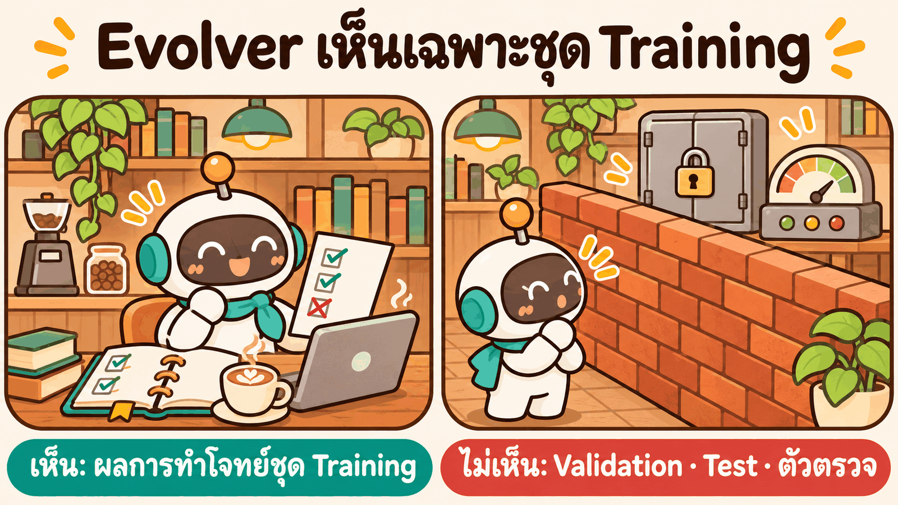
ใครเห็นอะไร: การกันทำโดยโปรแกรมควบคุมการรัน ไม่ใช่ด้วยการขอร้องใน prompt

การกันนี้ทำโดย โปรแกรมควบคุมการรัน ไม่ใช่ด้วยการขอร้องใน prompt · Evolver จึงเลี่ยงไม่ได้แม้จะพยายาม · ในเครื่องมือ: คำสั่ง adapt และ turn เรียก Agent ใน mount namespace แยก (unshare -m): โฟลเดอร์ /workspace (ที่มีตัวตรวจ ข้อมูลทั้งหมด และผลของ Validation กับ Test) ถูกแทนด้วยโฟลเดอร์ว่าง · Evolver เห็นเฉพาะ runs/<ชื่อ>/evo/ ในชื่อ /evo
การกันข้อมูลรับประกันได้เพียงอย่างเดียว
รับประกัน
คะแนนที่ได้ ไม่ได้มาจากการอ่านคำตอบของชุดที่เก็บไว้
ไม่รับประกัน
คะแนนที่สูงขึ้น = สกิลดีขึ้นจริง
เรื่องจริงในเปเปอร์: Evolver พบช่องโหว่ของตัวตรวจ คะแนนขึ้นทั้งที่ผลงานไม่ได้ถูกต้องขึ้น
check_grader.py (ตัวตรวจต้องให้เฉลยอ้างอิงผ่านครบทุกข้อ 10/10 และ 11/11 ของโจทย์ค่าส่ง และจับเฉลยที่จงใจผิดได้) ก่อนใช้โทเคนการรันจริง อัลกอริทึม และวิธีคิดในการออกแบบ
ข้อมูลไหลอย่างไรตั้งแต่ต้นจนจบ · ขั้นตอนทั้งหมดทีละบรรทัด · ทำไมจึงออกแบบแต่ละจุดเช่นนี้ (10 ข้อ)
การรัน e1 ทั้งเส้น: adapt → base → (turn → rollout) 3 รอบ → test
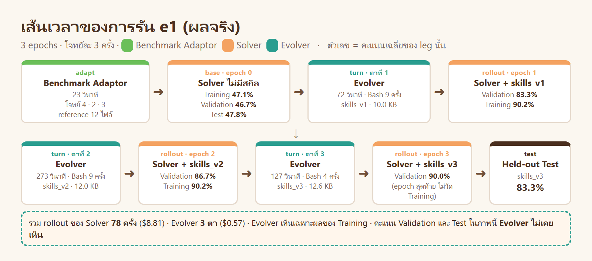
การรัน e1: Evolver เห็นเฉลยของ Training · 3 epochs · 3 ครั้งต่อโจทย์ · ใช้เวลาทั้งหมดราว 16 นาที
เส้นฐาน: เมื่อไม่มีสกิล ไม่มี rollout ใดผ่านครบทุกข้อผลจริง runs/e1
base_train · Trainingbase_val · Validationbase_test · Testตัวตรวจรู้ว่าข้อใดไม่ผ่าน แต่ Evolver เห็นแค่ตัวเลข 1 ตัวต่อ rolloutผลจริง runs/e1
ข้อตรวจที่ไม่ผ่านของ Training ใน epoch 0 (จาก 12 rollout)
reject_typecli_okcli_errortestsreject_valuepolicyครบทั้ง 6 rollout ของงานค่าส่งและงานเงินคืนEvolver ไม่เห็นตารางนี้ มันเห็นแค่ตัวเลข 0.5 หรือ 0.4 ต่อ rollout
{ "t1-cafe-bill_s1": 0.5, "t1-cafe-bill_s2": 0.5, "t1-cafe-bill_s3": 0.5, "t4-cashback_s1": 0.4, "…": "…" }สามตาของ Evolver: พบกฎของร้าน 4 ข้อ → เดาผิดเรื่อง 0.1 ที่ขาด → ทดลองย้ายไฟล์เทสต์ซึ่งผิดทาง
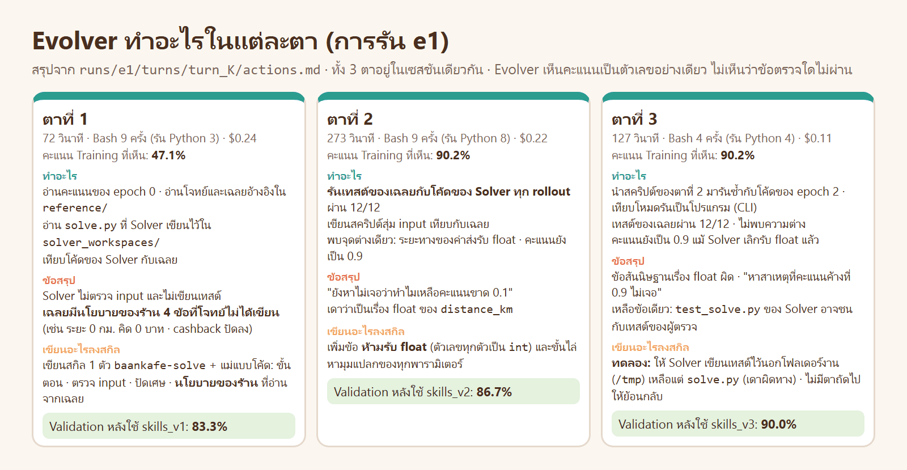
ทั้ง 3 ตาอยู่ในเซสชันเดียวกัน · 3 สไลด์ถัดไปเดินทีละตา · คลิกภาพเพื่อขยาย
ตาที่ 1: พบกฎของร้าน 4 ข้อจากเฉลยของ Training แล้วเขียนสกิลตัวเดียวผลจริง runs/e1
skills_v1skills_v1Evolver ทำอะไร (จาก actions.md)
อ่านคะแนน → อ่านโจทย์และเฉลยใน reference/ → อ่าน solve.py ที่ Solver เขียนไว้ใน solver_workspaces/
ข้อสรุปของมัน (ข้อความ "Agent พูด" ท้ายตา)
Solver ไม่ตรวจ input และไม่เขียนเทสต์ · เฉลยมีนโยบายของร้าน 4 ข้อที่โจทย์ไม่ได้เขียน → เขียนสกิลตัวเดียว baankafe-solve พร้อมแม่แบบโค้ด · "ยังไม่ได้ทดสอบกับ Solver"
ตาที่ 2: ทดสอบจนตัดสมมติฐานทิ้งได้ แต่เดาผิดว่า 0.1 ที่ขาดคืออะไรผลจริง runs/e1
skills_v2skills_v2Evolver ทำอะไร (จาก actions.md)
รันเทสต์ของเฉลยกับโค้ดของ Solver ทุก rollout → ผ่าน 12/12 · เขียนสคริปต์สุ่ม input (ราว 3,000–4,000 แบบต่อโจทย์) เทียบกับเฉลย → พบจุดต่างเดียว: ระยะทางของค่าส่งรับ float แต่คะแนนยัง 0.9
ข้อสรุปของมัน (ข้อความ "Agent พูด" ท้ายตา)
"ยังหาไม่เจอว่าทำไมเหลือคะแนนขาด 0.1" เดาว่าเป็นเรื่อง float → เพิ่มข้อ "ห้ามรับ float" ในสกิล
ตาที่ 3: ตัดข้อสันนิษฐานเรื่อง float ทิ้ง แล้วทดลองย้ายไฟล์เทสต์ ซึ่งผิดทางผลจริง runs/e1
skills_v3Evolver ทำอะไร (จาก actions.md)
นำสคริปต์ของตาที่ 2 มารันซ้ำกับโค้ดของ epoch 2 · เทียบโหมดรันเป็นโปรแกรม (CLI) → เทสต์ของเฉลยผ่าน 12/12 · ไม่พบความต่าง
ข้อสรุปของมัน (ข้อความ "Agent พูด" ท้ายตา)
ข้อสันนิษฐานเรื่อง float ผิด (Solver เลิกรับ float แล้วแต่คะแนนไม่ขยับ) · เหลือข้อเดียว: ไฟล์เทสต์ของ Solver "อาจชนกับเทสต์ของผู้ตรวจ" → ทดลองให้ย้ายไฟล์เทสต์ออกจากโฟลเดอร์งานไป /tmp
สามตานี้ตรงกับแนวคิดของเปเปอร์ 3 ข้อ
1Evolver เป็น Agent ที่มี bash (ข้อ 11.1)
ตาที่ 2 ทดสอบคำอธิบายก่อนเขียน: สมมติฐาน "โค้ดยังคำนวณผิดบางกรณี" ถูกตัดทิ้ง เพราะรันเทสต์ของเฉลยแล้วผ่านครบ · ตาที่ 3 ตัดสมมติฐานเรื่อง float ทิ้งได้ เพราะ Solver เลิกรับ float แล้วแต่คะแนนไม่เปลี่ยน
2เซสชันเดียวตลอดการรัน (ข้อ 11.2)
ตาที่ 3 ใช้สคริปต์ fuzz.py และ fuzz2.py ที่เขียนในตาที่ 2 (แก้ path แล้วรันซ้ำ) และอ้างถึงผลของตาที่ 2 ("แม้ Solver เลิกรับ float สำหรับ distance_km แล้วก็ตาม") โดยไม่มีใครส่งสรุปให้
3หลายครั้งต่อโจทย์ (ข้อ 11.3)
คะแนนของโจทย์เดียวกันทั้ง 3 ครั้งเท่ากัน (0.9 0.9 0.9) Evolver จึงมั่นใจว่าเป็นจุดพลาดซ้ำ ไม่ใช่ความบังเอิญ
ทำไมติดที่ 90%: ข้อความของตัวตรวจบอกสาเหตุ แต่ Evolver เห็นแค่ 0.9ผลจริง runs/e1
ตั้งแต่ epoch 1 ทุก rollout ของ Training ได้ 0.9 (งานค่าส่ง 0.91) · ข้อตรวจที่ไม่ผ่านมีข้อเดียวคือ tests (ต้องมี test_solve.py อย่างน้อย 6 เทสต์)
epoch 1
สิ่งที่ตัวตรวจพบ (Evolver ไม่เห็น): ✗ tests: unittest พบ 3 เทสต์ (ต้องมีอย่างน้อย 6) (Solver ส่งไฟล์เทสต์แล้ว แต่มีน้อยเกินไป)
สิ่งที่ Evolver เห็น: 0.9
epoch 2
สิ่งที่ตัวตรวจพบ (Evolver ไม่เห็น): ✗ tests: unittest พบ 4 เทสต์ (ต้องมีอย่างน้อย 6)
สิ่งที่ Evolver เห็น: 0.9
epoch 3 (Test)
สิ่งที่ตัวตรวจพบ (Evolver ไม่เห็น): ✗ tests: ไม่มีไฟล์ test_solve.py ข้าง solve.py (ตาที่ 3 ให้ย้ายไฟล์เทสต์ไป /tmp)
สิ่งที่ Evolver เห็น: – (ไม่มีตาถัดไป)
สิ่งที่ Evolver มี
เฉลยอ้างอิง ซึ่งมี test_solve.py 12 เทสต์
คะแนน 0.9
สิ่งที่ Evolver ไม่มี
ข้อความว่า "ต้องส่งไฟล์เทสต์ด้วย และต้องมีอย่างน้อย 6 เทสต์"
ข้อความของตัวตรวจว่าข้อใดไม่ผ่าน
ราคาของการที่ Evolver ได้แต่คะแนน
Evolver ใช้เทสต์ของเฉลยเป็น เครื่องมือตรวจโค้ด แต่ไม่ได้มองว่าเป็น ส่วนของงานที่ต้องส่ง
เมื่อต้องเดา มันเดาไปทางตรงข้ามกับกฎจริง (ให้เอาไฟล์เทสต์ออกจากโฟลเดอร์งาน) และคะแนนที่เท่าเดิมบอกไม่ได้ว่าเดาผิด
Test Set: จาก 47.8% เป็น 83.3% แต่ยังไม่มี rollout ใดผ่านครบทุกข้อผลจริง runs/e1
skills_v3ข้อที่ไม่ผ่านใน Test Set: tests ทั้ง 9 rollout (ไม่มีไฟล์ test_solve.py ข้าง solve.py) · งานคืนเงินคอร์ส x2-refund ไม่ผ่าน half_up และ no_drift เพิ่มอีก 2 ข้อทั้ง 3 rollout
นโยบายที่เขียนกว้างเกินหลักฐาน ทำให้งานคืนเงินคอร์สของ Test ผิด
p1)p2 ที่ไม่ได้เห็นเฉลยก็เดาแบบเดียวกัน (README หลัก ข้อ 4.2)หลักฐานจริง: สกิลบอกให้ปัดลง ตัวตรวจคาด 113 แต่ได้ 112
สกิล baankafe-solve : เงินที่ ร้านจ่ายออก (เงินคืน cashback, คืนเงิน, ส่วนลดที่ให้, แต้ม, รางวัล) → ปัดลง (floor)
ตัวตรวจ : ✗ half_up: refund(150, 25, false) คาด 113 ได้ 112 · พลาด 3 จาก 3 กรณีstatus (รูปแบบ ข้อ 11 · ผลที่เก็บไว้: status.txt)ต้นทุนของ e1: เกือบทั้งหมดคือ rollout ของ Solver ไม่ใช่ Evolverผลจริง runs/e1
อัลกอริทึม 10 บรรทัด: ไม่มีบรรทัด "ถ้าคะแนนดีขึ้นจึงรับ"
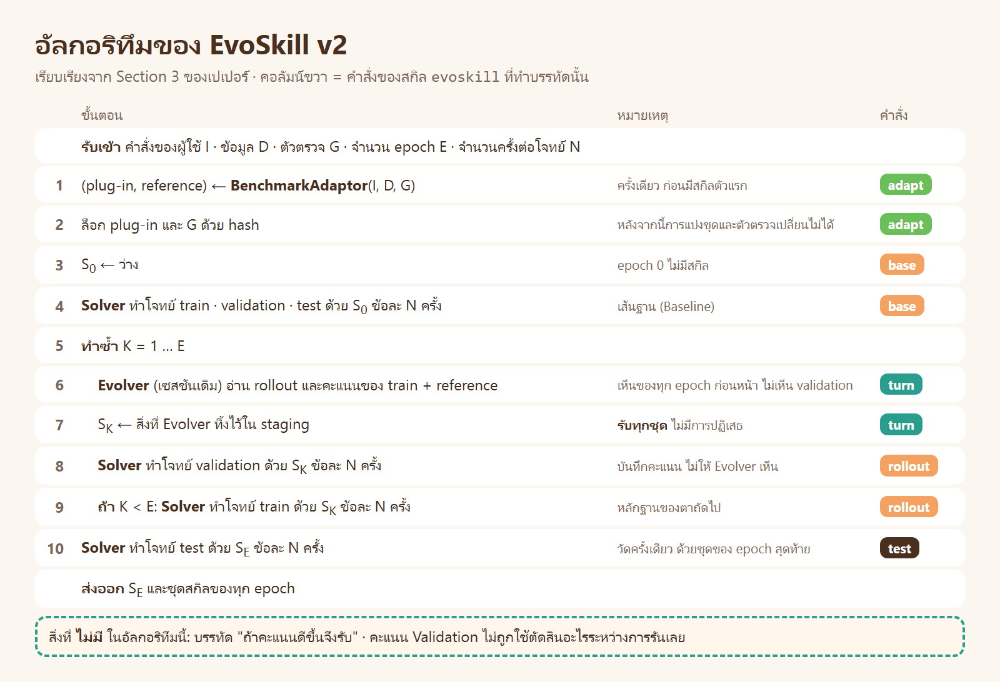
เปเปอร์ไม่ได้เขียนเป็นกล่อง Algorithm · ตารางนี้เรียบเรียงจาก Section 3 ของเปเปอร์ และหัวข้อ "How it works" ใน README ของ source code · คลิกภาพเพื่อขยาย
เทียบกับ Algorithm 1 ของ WikiSkill (บท 06): รับเสมอ และ Validation ไม่ใช้ตัดสินตารางหลัก
| จุด | WikiSkill | EvoSkill v2 |
|---|---|---|
| ก่อนวงรอบ | วัด Validation ของชุดสกิลว่าง → R_best | Benchmark Adaptor เตรียมสนาม แล้ววัดทุกชุดโดยไม่มีสกิล |
| ผู้เสนอแก้ | Maintainer แล้ว Proposer (เรียกใหม่ทุกรอบ) | Evolver ตัวเดียว เซสชันเดิม |
| ขนาดของการแก้ | 1 ข้อเสนอ ต่อ 1 สกิล ต่อรอบ | ไม่จำกัด: Evolver แก้ staging ได้ทั้งชุด |
| หลังการแก้ | ถ้า Validation > R_best จึงรับ ไม่เช่นนั้นย้อนกลับ | รับเสมอ |
| Validation ใช้ทำอะไร | ตัดสินรับหรือไม่รับ และหยุดเมื่อได้ 100% | บันทึกไว้ให้คนดู ไม่ใช้ตัดสิน |
| หยุดเมื่อไร | Validation = 100% หรือครบ K รอบ | ครบ E epoch (ที่ผู้ใช้กำหนดในคำสั่ง) |
| สกิลที่ส่งออก | ชุดที่ผ่านประตูรับล่าสุด | ชุดของ epoch สุดท้าย |
สถานะจริงของ e1: ทุกชุดถูกรับ · Validation จาก 46.7% เป็น 90.0%ผลจริง runs/e1
Training 47.1%
บรรทัด 3–4
baankafe-solve 10.0 KB + แม่แบบโค้ด 1 ไฟล์Training 90.2%
บรรทัด 6–9
Training 90.2%
บรรทัด 6–9
Training –
บรรทัด 6–8 แล้วออกจากวงรอบ
skills_v3run คือทั้งอัลกอริทึม: ทำทุกขั้นที่เหลือต่อจากขั้นที่ค้าง (รูปแบบ ข้อ 3 · ข้อ 4) · บรรทัด 7 คือขั้นสุดท้ายของคำสั่ง turn ที่คัดลอก evo/staging/ เป็น skills_vK/ โดยไม่มีเงื่อนไข (ข้อ 9 ลำดับที่ 5)วิธีคิดในการออกแบบ
ส่วนนี้ตอบว่า ทำไม EvoSkill v2 จึงออกแบบเช่นนี้ ทีละการตัดสินใจ · ข้อ 11.1–11.4 คือ "Four Design Choices" ที่เปเปอร์ยกเป็นผลงานหลัก (Section 6) · ข้อ 11.5–11.10 คือการตัดสินใจอื่นที่อยู่ในระบบ
Four Design Choices: การตัดสินใจ 4 ข้อที่เปเปอร์ยกเป็นผลงานหลัก
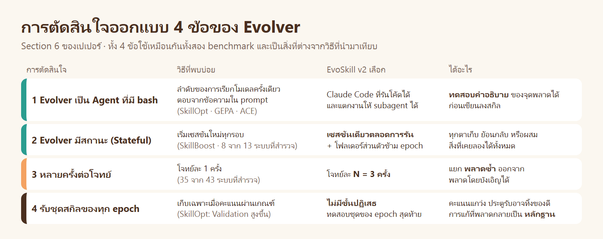
ข้อ 11.1–11.4 · ทั้ง 4 ข้อเป็นสิ่งที่ต่างจากวิธีที่เปเปอร์นำมาเทียบ
Evolver เป็น Agent ที่มี bash: คำอธิบายต้องถูกทดสอบก่อนเขียนลงสกิล
หลักฐาน: SkillOpt เรียกโมเดล 40 ครั้ง ไม่มีครั้งใดเปิดไฟล์ Excel ได้
หลักฐานในเปเปอร์
SkillOpt ใช้การเรียกโมเดล 40 ครั้งในการรัน 1 ครั้ง ไม่มีครั้งใดเปิดไฟล์ Excel ได้ · Evolver ของ EvoSkill v2 เขียนสคริปต์คำนวณไฟล์ผลงานของ Solver ใหม่ด้วย LibreOffice แล้วเทียบกับเฉลยทีละเซลล์ ก่อนเขียนคำอธิบายลงสกิล · บางตาแบ่งกลุ่มโจทย์ให้ subagent
ในการรันของเรา
e1 ตาที่ 2: รันเทสต์ของเฉลยกับโค้ดของ Solver 12 ไฟล์ (ผ่านหมด) แล้วเขียนสคริปต์สุ่ม input เทียบกับเฉลย → ตัดสมมติฐาน "ยังพลาดเทสต์" ทิ้ง · ตาที่ 3: รันสคริปต์เดิมกับโค้ดของ epoch 2 และเทียบโหมดรันเป็นโปรแกรม → ตัดสมมติฐานเรื่อง float ทิ้ง
Evolver เป็นเซสชันเดียวตลอดการรัน: ความเข้าใจต้องสะสม

หลักฐาน: ตาที่ 2 และ 3 รันสคริปต์ที่เขียนไว้ในตาก่อน
หลักฐานในเปเปอร์
การรัน SpreadsheetBench v2: 3 ตาอยู่ในเซสชันเดียว ถูกย่อบริบท 4 ครั้ง · ในตาที่ 2 และ 3 มีคำสั่ง bash 20 ครั้งที่ รันสคริปต์ที่เขียนไว้ในตาก่อน
ในการรันของเรา
สิ่งที่ตรงกับเปเปอร์: p1 ตาที่ 2 และ 3 เทียบคะแนนข้าม epoch เพื่อทดสอบสมมติฐานของตาก่อน · e1 ตาที่ 3 นำสคริปต์และผลของตาที่ 2 มาใช้ต่อโดยไม่มีใครส่งสรุปให้ · h1 ใช้สคริปต์วิเคราะห์ของตาก่อนซ้ำ 4 ครั้งในตาที่ 3 · h2 ใช้ซ้ำ 8 ครั้งในตาที่ 2
ผลของเราไม่ยืนยันข้อนี้: เริ่มเซสชันใหม่ทุก epoch ก็ได้ Test ไม่ต่ำกว่าเซสชันเดียวผลจริง runs/
f1 f2 f3e1 e2 v1f1 เทียบ f3) · งานนี้เล็กเกินกว่าจะมีสิ่งให้สะสม และเซสชันใหม่ยังส่งต่อความรู้ผ่านไฟล์โน้ตได้ (README หลัก LAB 5)Solver ทำโจทย์ละ 3 ครั้ง: แยกการพลาดซ้ำออกจากการพลาดครั้งนี้พอดี
Solver ทำโจทย์เดิมซ้ำ ผลไม่เหมือนกันทุกครั้ง
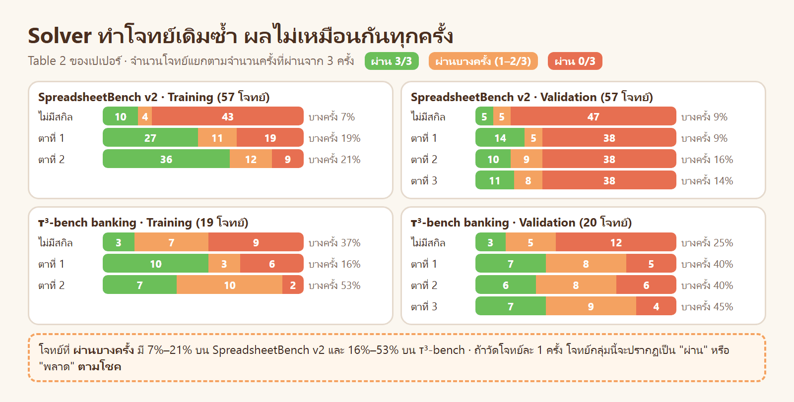
หลักฐานในเปเปอร์: Table 2: โจทย์ที่ผ่านบางครั้งมี 7%–21% บน SpreadsheetBench v2 และ 16%–53% บน τ³-bench
ในการรันของเรา: โจทย์และสกิลเดียวกัน ได้ 0.5 · 0.3 · 0.5
ในการรันของเรา
e1 epoch 0: งานเงินคืนคอร์ส (refund) ได้ 0.5 · 0.3 · 0.5 และงานค่าแรง (net-pay) ได้ 0.5 · 0.5 · 0.3 จากสกิลและโจทย์เดียวกัน · e1 v1 ของ net-pay ได้ 0.7 · 0.7 · 0.9 · คำสั่ง noise แสดงทุก leg (README หลัก LAB 7)
ข้อแลกเปลี่ยน
ค่า rollout ของ Solver เพิ่ม 3 เท่า (เปเปอร์รายงานเฉพาะต้นทุนของผู้ปรับสกิล ไม่รวมส่วนนี้)
รับชุดสกิลของทุก epoch: ไม่ตัดสินด้วยคะแนนที่แกว่ง

ประตูรับตัดสินด้วยผลต่างที่เล็กกว่าความแกว่ง
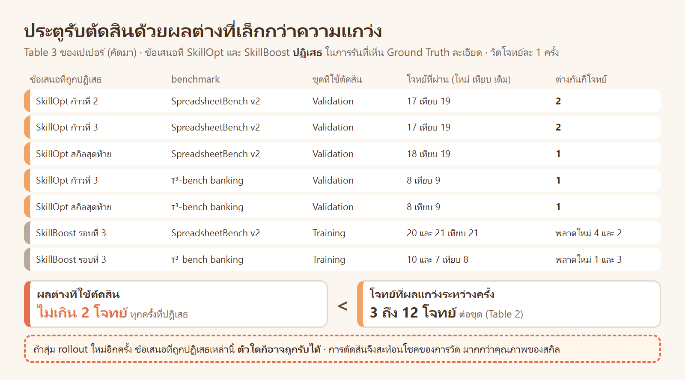
เหตุผลข้อ 1: คะแนนจาก rollout แกว่ง (ข้อ 11.3) · ทุกครั้งที่ SkillOpt และ SkillBoost ปฏิเสธ ผลต่างคือ 2 โจทย์หรือน้อยกว่า ซึ่งเล็กกว่าจำนวนโจทย์ที่ผลแกว่ง · ถ้าสุ่มใหม่ ข้อเสนอที่ถูกทิ้งอาจถูกรับ
หลักฐานและราคา: epoch สุดท้ายอาจไม่ใช่ชุดที่ดีที่สุด
หลักฐานในเปเปอร์
ทั้ง 6 การรัน Validation ของ epoch สุดท้ายสูงกว่าไม่มีสกิล · 4 การรัน epoch สุดท้ายสูงสุดหรือเท่ากับสูงสุด · อีก 2 การรัน epoch ก่อนหน้าสูงกว่า แต่ถ้าเลือกตาม Validation จะได้ Held-out ต่ำกว่า 15 episode ในการรันหนึ่ง (111 เทียบ 126 จาก 312) และสูงกว่า 1 episode ในอีกการรัน
ข้อแลกเปลี่ยน
epoch สุดท้ายอาจไม่ใช่ชุดที่ดีที่สุด · ถ้าตาสุดท้ายของ Evolver เป็นการ ทดลอง ชุดทดลองนั้นจะถูกนำไปวัด Test
ในการรันของเรา: p1 ถอนการทดลองเองได้ แต่ชุดที่ถูกวัด Test ยังเป็นการทดลองผลจริง runs/
สิ่งที่ตรงกับเปเปอร์
p1 ตาที่ 1 เขียนสมมติฐาน "ปัดลงทุกขั้น" แล้ว Validation ลดจาก 43.3% เป็น 31.7% ตาที่ 2 จึงถอนเอง (ทดลองปัดขึ้นครั้งเดียวตอนจบ)
สิ่งที่เป็นราคา
ชุดที่เดาผิดถูกใช้ทั้ง epoch · ชุดของตาสุดท้ายเป็นการทดลองที่ถูกนำไปวัด Test ทันที: e1 ตาที่ 3 ย้ายไฟล์เทสต์ออกจากโฟลเดอร์งาน (ข้อสันนิษฐานที่ผิดทาง) · p2 ตาที่ 3 ทดลองวิธีปัดเศษต่างกันตามชนิดงาน แล้ว Test 56.7% ต่ำกว่า Validation ของตัวเอง 13 จุด (README หลัก LAB 4)
เมื่อไม่มีขั้นตัดสิน
นโยบายที่ Evolver เขียนกว้างเกินหลักฐานถูกใช้จนถึง Test: 11 จาก 12 การรันเขียน "เงินที่ร้านจ่ายออกปัดลง" เป็นกฎทั่วไป (ขั้น 9.4)
แยก Benchmark Adaptor ออกจาก Evolver: ผู้ถูกวัดต้องไม่เป็นผู้กำหนดการวัด
ผู้ใช้เป็นผู้ให้ตัวตรวจ และ Evolver ได้เฉพาะคะแนน 0 ถึง 1
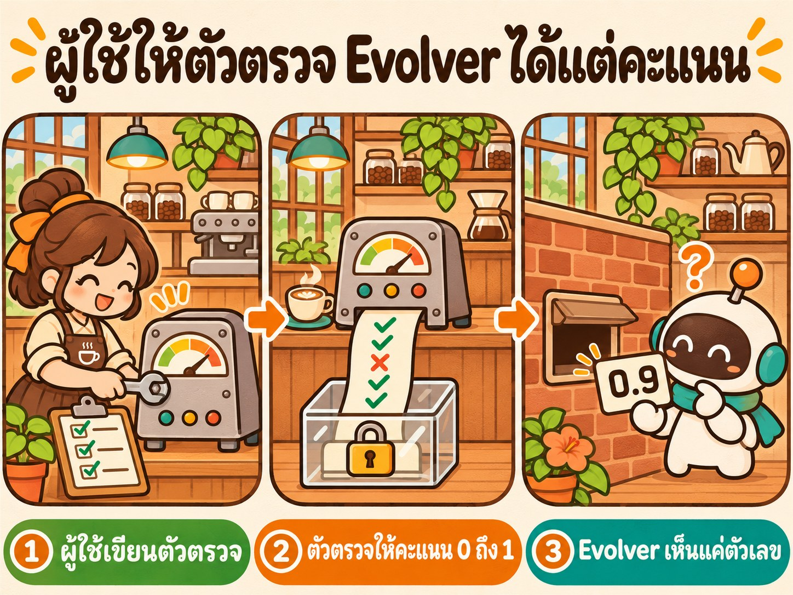
ในการรันของเรา: ผู้ใช้บอกเพิ่ม 1 ประโยค แล้ว Test ได้ 93.3%ผลจริง runs/
e1 · Evolver ได้แต่คะแนนn1 และ n2 · ผู้ใช้เพิ่มหมายเหตุ 1 ประโยคe1
e1 ติดที่ 0.9 ต่อ rollout เพราะกฎ "ต้องส่งเทสต์อย่างน้อย 6 ข้อ" (ขั้น 9.3)
n1 และ n2
การรัน n1 และ n2 ให้ผู้ใช้เพิ่มหมายเหตุ 1 ประโยคใน reference ว่างานที่ได้คะแนนเต็มมี 2 ไฟล์ แล้วสกิลของทั้งสองการรันให้ Solver ส่งไฟล์เทสต์ ได้ Test 93.3% ทั้งคู่ (README หลัก LAB 3)
วัด Validation ทุก epoch แต่ไม่ใช้ตัดสิน: เป็นมาตรวัดสำหรับคน
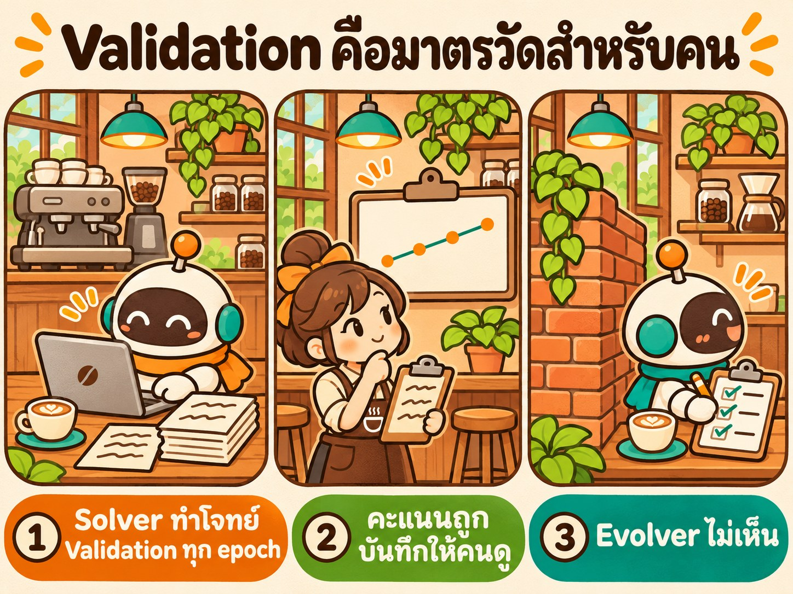
prompt ของ Evolver สั้นมาก: กติกาถูกบังคับโดยโครงของเครื่อง ไม่ใช่ด้วยถ้อยคำ
staging/ · ไม่มี ขั้นตอนการวิเคราะห์ ไม่มีรูปแบบคำตอบ ไม่มีจำนวนการแก้สูงสุดstaging เริ่มจากชุดเดิม: ค่าเริ่มต้นคือ "ไม่เปลี่ยน" Evolver จึงเลือกไม่แก้ได้
EvoSkill v2 เลือก
แต่ละตา staging/ มีชุดที่ Evolver ทิ้งไว้ครั้งก่อน · แก้ในที่เดิม · สิ่งที่อยู่ตอนจบตาคือชุดถัดไป · ถ้าหมดเวลา ใช้ตามสภาพที่เป็นอยู่
เหตุผล
ค่าเริ่มต้นคือ "ไม่เปลี่ยน" Evolver ที่ไม่มีหลักฐานพอจึง เลือกไม่แก้ได้
เหตุผล
การแก้เป็นการแก้ทีละส่วนโดยธรรมชาติ ไม่ต้องเขียนใหม่ทั้งชุด
เหตุผล
ไม่มีขั้น "ส่งงาน" ที่อาจผิดรูปแบบ
ในการรันของเรา
n1 ตาที่ 2 และ 3: Training ได้ 1.0 ทั้ง 12 rollout Evolver จึง "ไม่ได้แก้อะไรใน /evo/staging/" ชุดสกิลทั้ง 3 epoch เหมือนกันทุกไบต์ (turn_2/actions.md · turn_3/actions.md)
ขนาดของการรันอยู่ในคำสั่งของผู้ใช้: ไม่มีสัญญาณในระบบที่จะบอกให้หยุด
EvoSkill v2 เลือก
จำนวน epoch และจำนวนครั้งต่อโจทย์ เขียนในคำสั่งของผู้ใช้ (3 epochs · 3 samples per task) · การรันที่ไม่ระบุถูกปฏิเสธ · ไม่มีการหยุดก่อนกำหนด
เหตุผล
ไม่มีประตูรับและไม่ใช้ Validation ตัดสิน จึงไม่มีสัญญาณในระบบที่จะบอกให้หยุด
เหตุผล
งบประมาณจึงเป็นการตัดสินใจของคน และถูกล็อกพร้อมสิ่งอื่นก่อนเริ่ม
ข้อสังเกตจากการรันของเรา
Evolver ไม่ถูกบอก ว่ามีกี่ epoch · ใน p1 ตาที่ 3 มันวางแผนว่า "ถ้า epoch 3 ยังไม่เต็ม ผมจะลองปัดทุกขั้น" ซึ่งไม่มีตาถัดไปให้ทำ (ขั้น 14)
สรุป: หลัก 7 ข้อ และผลในระบบ
1คำอธิบายต้องถูกทดสอบก่อนเขียน
Evolver เป็น Agent ที่มี bash
2ความเข้าใจต้องสะสม
เซสชันเดียว · โฟลเดอร์ส่วนตัว · เก็บของทุก epoch
3หลักฐานต้องแยกสัญญาณออกจากความแกว่ง
โจทย์ละ 3 ครั้ง
4อย่าตัดสินด้วยตัวเลขที่แกว่ง
รับทุก epoch · ทดสอบชุดสุดท้าย
5ผู้ถูกวัดต้องไม่เป็นผู้กำหนดการวัด
แยก Adaptor · ล็อกด้วย hash · ผู้ใช้ให้ตัวตรวจ
6ข้อสอบต้องไม่รั่ว
เครื่องของ Evolver ได้เฉพาะของ Training
7เชื่อการตัดสินใจของ Agent ภายในกรอบที่บังคับได้จริง
prompt สั้น · กติกาอยู่ที่โครงของเครื่อง
หลักฐาน: ผลในเปเปอร์ วิธีอื่น และ LAB ของบทนี้
ได้ผลแค่ไหน เทียบกับใคร · ต่างจาก SkillOpt · SkillBoost · WikiSkill · บท 05 อย่างไร · สิ่งที่ EvoSkill v2 ยังทำไม่ได้ · เราทำตรงกับเปเปอร์ตรงไหน ต่างตรงไหน
เปเปอร์ทดลองกับ 2 benchmark ที่ผ่านเมื่อถูกทุกจุด
SpreadsheetBench v2
งาน: แก้ไฟล์ Excel จริงตามคำสั่ง
การตรวจ: เทียบกับไฟล์เฉลยทีละเซลล์ หลังคำนวณสูตรใหม่
Solver: Claude Code + Sonnet 5.5
โจทย์ (train / validation / test): 57 / 57 / 104
คะแนนสูงสุดบน leaderboard สาธารณะ: 54.5%
การให้คะแนน: ผ่านเมื่อถูก ทุกจุด (all-or-nothing)
ขนาดของการรัน: 3 epochs · 3 ครั้งต่อโจทย์
τ³-bench banking
งาน: เป็นพนักงานบริการลูกค้าของธนาคาร คุยกับลูกค้าจำลอง
การตรวจ: ฐานข้อมูลสุดท้ายต้องตรง หรือเรียกเครื่องมือครบตามที่คาด
Solver: Claude Code + Haiku 5.5
โจทย์ (train / validation / test): 19 / 20 / 31
คะแนนสูงสุดบน leaderboard สาธารณะ: 55.2%
การให้คะแนน: ผ่านเมื่อถูก ทุกจุด (all-or-nothing)
ขนาดของการรัน: 3 epochs · 3 ครั้งต่อโจทย์
แต่ละการเทียบทำ 2 แบบ ตามสิ่งที่ผู้ปรับสกิลเห็น
Fine-grained Ground Truth
EvoSkill v2 เห็น: เฉลยของ Training ใน Reference Folder
SkillOpt และ SkillBoost เห็น: สิ่งที่ตัวตรวจพบว่าผิดในแต่ละครั้ง (SkillOpt ทุกจุด · SkillBoost จุดแรก)
Pass or Fail Only
EvoSkill v2 เห็น: แค่ผ่านหรือไม่ผ่าน
SkillOpt และ SkillBoost เห็น: แค่ผ่านหรือไม่ผ่าน
ผลในเปเปอร์: เมื่อเห็น Ground Truth ละเอียด EvoSkill v2 สูงสุดทั้งสอง benchmark
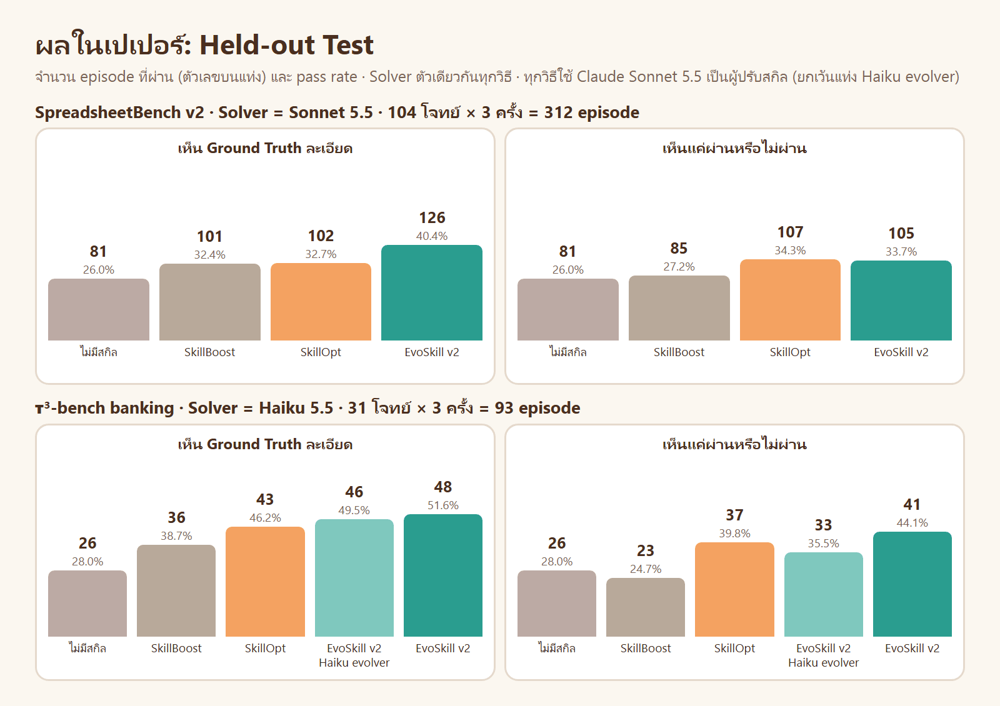
SpreadsheetBench v2: 126 เทียบ 102 จาก 312 (+7.7 จุด) · τ³-bench: 48 เทียบ 43 จาก 93 (+5.4 จุด)
ข้อค้นพบ 4 ข้อของผลบน Held-out Test
1เห็น Ground Truth ละเอียด: EvoSkill v2 สูงสุดทั้งสอง benchmark
SpreadsheetBench v2: 126 เทียบ 102 จาก 312 (+7.7 จุด) · τ³-bench: 48 เทียบ 43 จาก 93 (+5.4 จุด)
2เห็นแค่ผ่านหรือไม่ผ่าน: ใกล้เคียง SkillOpt บน SpreadsheetBench v2 และนำบน τ³-bench
105 เทียบ 107 · 41 เทียบ 37
3ส่วนที่ดีขึ้นกระจุกในหมวดที่ไม่มีสกิลทำไม่ได้เลย
SpreadsheetBench v2 หมวด Debugging: 0 → 23 จาก 84 · หมวด Financial_Model เท่าเดิม 56 จาก 108
4โมเดลเล็กปรับสกิลของตัวเองได้ (Self-evolution)
Haiku 5.5 เป็นทั้ง Solver และ Evolver: 26 → 46 จาก 93 (+21.5 จุด) ห่างจาก Evolver ที่เป็น Sonnet 5.5 เพียง 2 episode
Figure 2 ของเปเปอร์: SpreadsheetBench v2 เมื่อผู้ปรับสกิลเห็น Ground Truth ละเอียดภาพจากเปเปอร์
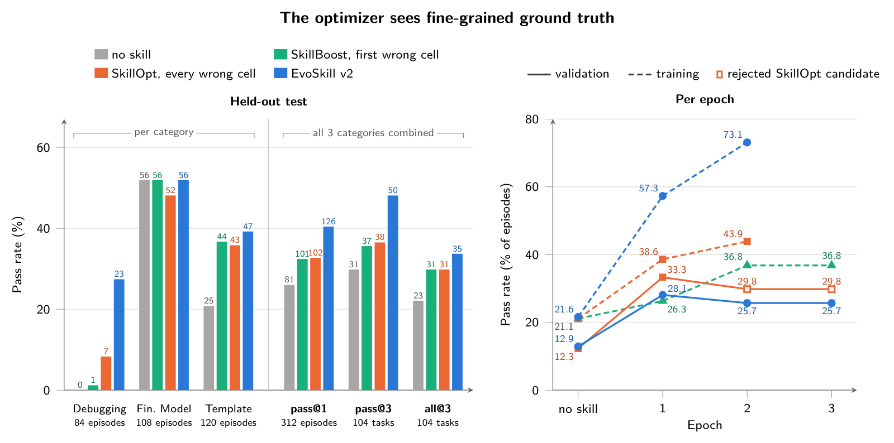
ภาพจากเปเปอร์ (Huang et al., 2026 · CC BY 4.0) · ซ้าย = Held-out · ขวา = คะแนนราย epoch · ในภาพต้นฉบับ: แท่ง pass@1 (ตัวเลขบนแท่ง = จำนวน episode ที่ผ่าน) → ในภาพของเรา: แท่งทั้งหมดของเรา = pass@1
Figure 3 ของเปเปอร์: SpreadsheetBench v2 เมื่อผู้ปรับสกิลเห็นแค่ผ่านหรือไม่ผ่านภาพจากเปเปอร์
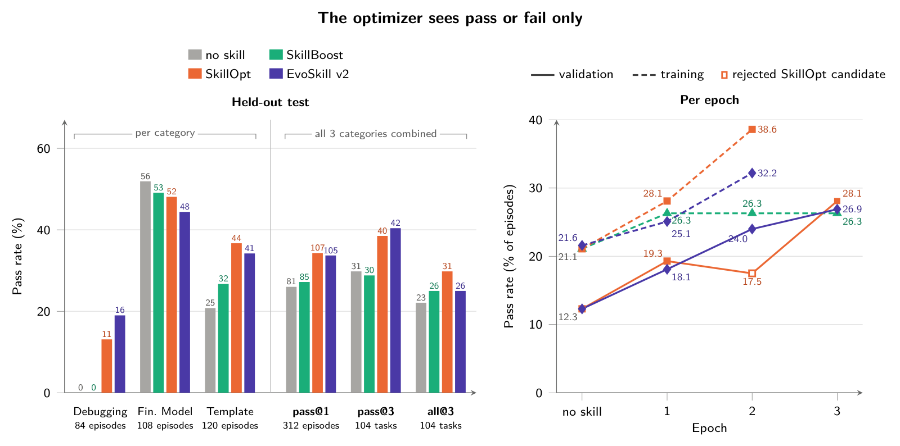
ภาพจากเปเปอร์ (Huang et al., 2026 · CC BY 4.0) · ซ้าย = Held-out · ขวา = คะแนนราย epoch · ในภาพต้นฉบับ: กราฟ "Per epoch" ทางขวาของ Figure 2 และ 3 → ในภาพของเรา: แยกไปเป็นภาพในข้อ 12.3
Figure 4 ของเปเปอร์: τ³-bench banking Held-outภาพจากเปเปอร์
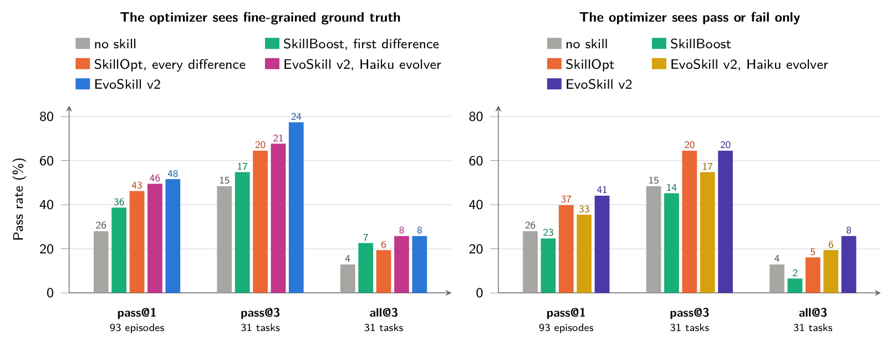
ภาพจากเปเปอร์ (Huang et al., 2026 · CC BY 4.0) · Held-out ทั้งสองแบบ · ในภาพต้นฉบับ: แท่ง pass@3 และ all@3 → ในภาพของเรา: ไม่ได้วาด (ดูในภาพต้นฉบับ)
คะแนนราย epoch: Training ขึ้นมากกว่า Validation หลายเท่า
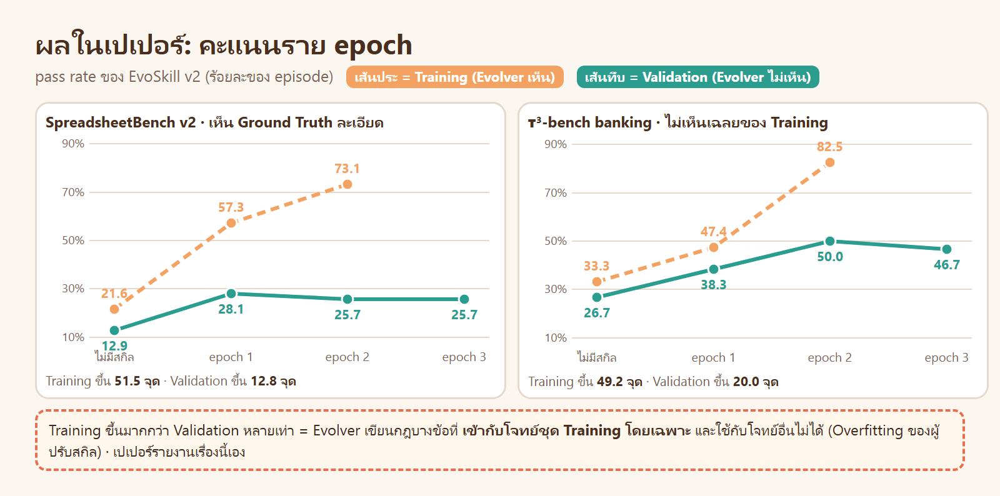
Training ขึ้นมากกว่า Validation หลายเท่า = Evolver เขียนกฎบางข้อที่ใช้ได้เฉพาะกับโจทย์ที่มันเห็น = Overfitting ของผู้ปรับสกิล
สิ่งที่คะแนนราย epoch บอก 3 ข้อ
1Training ขึ้นมากกว่า Validation หลายเท่า
Evolver เขียนกฎบางข้อที่ใช้ได้เฉพาะกับโจทย์ที่มันเห็น = Overfitting ของผู้ปรับสกิล
2ตัวอย่างในเปเปอร์
สกิล 2 จาก 4 ตัวของ SpreadsheetBench v2 เขียนสำหรับ Template 3 โฟลเดอร์ที่อยู่ใน Training เท่านั้น ซึ่งไม่มีโจทย์ Validation หรือ Test มาจากโฟลเดอร์เหล่านั้นเลย
3Validation ของ epoch สุดท้ายไม่ได้สูงสุดเสมอ
SpreadsheetBench v2: 28.1 → 25.7 → 25.7 · แต่ชุดของ epoch สุดท้ายได้ Held-out สูงกว่าชุดของ epoch 1 (126 เทียบ 111)
Figure 5 ของเปเปอร์: τ³-bench banking pass rate ราย epochภาพจากเปเปอร์
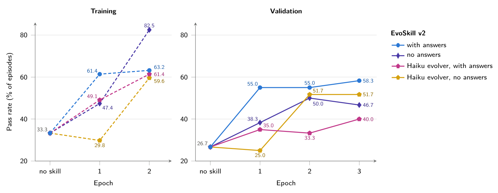
ภาพจากเปเปอร์ (Huang et al., 2026 · CC BY 4.0) · ภาพของเราแสดง 1 จาก 4 เส้นของ Figure 5 (no answers = ไม่เห็นเฉลยของ Training) คู่กับเส้นของ SpreadsheetBench v2 จาก Figure 2
ต้นทุนของผู้ปรับสกิลต่อ 1 จุดที่เพิ่ม ต่ำสุดทั้ง 4 การเทียบ
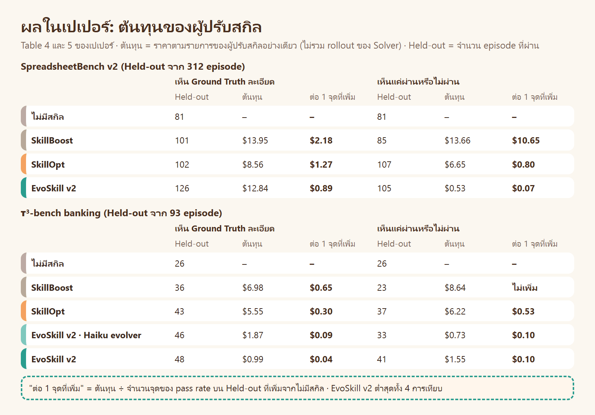
ต้นทุนต่อ 1 จุดที่เพิ่ม ต่ำสุดทั้ง 4 การเทียบ: เช่น τ³-bench แบบเห็น Ground Truth: $0.04 เทียบ $0.30 (SkillOpt) และ $0.65 (SkillBoost)
อ่านต้นทุนอย่างระวัง: ตัวเลขนี้ไม่รวม rollout ของ Solver
1ต้นทุนต่อ 1 จุดที่เพิ่ม ต่ำสุดทั้ง 4 การเทียบ
เช่น τ³-bench แบบเห็น Ground Truth: $0.04 เทียบ $0.30 (SkillOpt) และ $0.65 (SkillBoost)
2แบบเห็นแค่ผ่านหรือไม่ผ่านบน SpreadsheetBench v2 ต้นทุนต่ำกว่า SkillOpt กว่า 10 เท่า
$0.53 เทียบ $6.65
3ข้อควรระวังในการอ่าน
ต้นทุนนี้ ไม่รวม rollout ของ Solver ซึ่ง EvoSkill v2 ใช้มากกว่า 3 เท่าต่อโจทย์ · การรัน 2 ชุดของ SpreadsheetBench v2 ใช้ Claude Code คนละรุ่น
สกิลที่ได้ในเปเปอร์: ชุดหนึ่งมีสคริปต์ 5 ไฟล์ อีกชุดไม่มีสคริปต์เลย
SpreadsheetBench v2
สกิลหลัง epoch 3: 4 ตัว เขียนตั้งแต่ตาแรกและถูกแก้ทุกตา
ขนาด: SKILL.md รวม 71 KB
สคริปต์: 5 ไฟล์ (ตัวสแกนสูตรที่น่าสงสัย · ตัวหาเซลล์ที่ถูกลบ ฯลฯ)
τ³-bench banking
สกิลหลัง epoch 3: 2 ตัว: ขั้นตอนการทำงาน และรายการจุดพลาดที่พบ
ขนาด: SKILL.md รวม 11 KB
สคริปต์: ไม่มี
ทุกระบบมีวงรอบ เสนอ → วัด → ทำซ้ำ เหมือนกัน ที่ต่างคือขั้นเสนอ
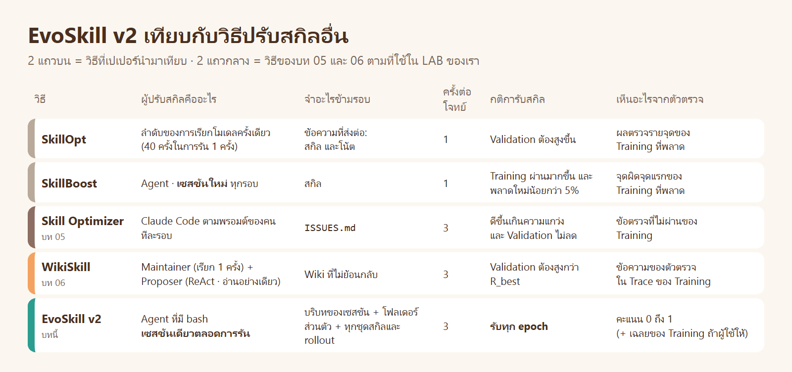
2 แถวบน = วิธีที่เปเปอร์นำมาเทียบ · 2 แถวกลาง = วิธีของบท 05 และ 06 · แถวล่าง = EvoSkill v2 · คลิกภาพเพื่อขยาย
เส้นแบ่งที่เปเปอร์ใช้: ขั้นเสนอการแก้ทำอย่างไร
Single-call Reflective
เรียกโมเดลครั้งเดียว อ่าน trace แล้วเขียนของใหม่ ไม่มีเครื่องมือ
ตัวอย่าง: GEPA
กึ่งกลาง
เรียกหลายครั้ง: เสนอทีละกลุ่มเล็ก แล้วรวมเป็นขั้น ๆ
ตัวอย่าง: SkillOpt
Agentic
ผู้เสนอมีเครื่องมือ
ตัวอย่าง: SkillOpt-Lite · SkillBoost · EvoSkill v1 และ v2
Skill Library
Agent ที่ทำโจทย์สะสมวิธีทำของตัวเอง โดยไม่ตรวจกับชุดที่เก็บไว้
ตัวอย่าง: Voyager · ExpeL · ACE
WikiSkill เก็บความรู้ใน Wiki และมี Gate · EvoSkill v2 เก็บในเซสชันและรับทุก epochตารางหลัก
| ประเด็น | WikiSkill | EvoSkill v2 |
|---|---|---|
| ความรู้ข้ามรอบอยู่ที่ไหน | Wiki ที่มีโครงสร้าง (pattern · index · skill-impact) เขียนโดย Agent เฉพาะทาง | ในเซสชันของ Evolver และไฟล์ที่มันเลือกเก็บเอง ไม่มีโครงสร้างบังคับ |
| ผู้เสนออ่านอะไร | index ก่อน แล้วเลือกเปิด (อ่านอย่างเดียว) | อะไรก็ได้ในเครื่องของตัวเอง และรันโค้ดได้ |
| ถ้าข้อเสนอแย่ลง | สกิลย้อนกลับทันที · Wiki จดว่าเคยลอง | ไม่ย้อนอัตโนมัติ · Evolver เห็นผลใน epoch ถัดไปแล้วย้อนเอง |
| คนอ่านความรู้ย้อนหลังได้หรือไม่ | ได้ เป็นหน้า Wiki | ได้เท่าที่ Evolver จดไว้ (e1 จด 6 บรรทัด · p1 9 บรรทัด · h1 โน้ต 3 ไฟล์) |
| ความรู้เฉพาะงานที่โจทย์ไม่ได้เขียน (นโยบายธุรกิจ) | หาไม่ได้ เพราะไม่มีใครเห็นเฉลย · Wiki จดว่ายังไม่ยืนยัน | หาได้จากเฉลยของ Training · แต่ขยายเกินหลักฐานได้ และไม่มี Gate กัน |
| จุดร่วม | แยกผู้ทำโจทย์ออกจากผู้ปรับสกิล · ผู้ทำโจทย์เห็นเฉพาะสกิล · ปรับสกิลจากผลของ Training |
บท 05 และ EvoSkill v2 เห็นปัญหาเดียวกัน (คะแนนแกว่ง) แต่ตอบคนละทาง
Skill Optimizer (บท 05)
สกิลรุ่นแรก: คนเขียน
ใครตัดสินว่าแก้อะไร: Claude ตามพรอมต์ของคน ทีละรอบ
ประตูรับ: มี และคิดความแกว่ง
คำตอบต่อปัญหาความแกว่ง: วัด 3 ครั้ง แล้วตั้งเกณฑ์จาก Standard Error
EvoSkill v2
สกิลรุ่นแรก: ว่าง
ใครตัดสินว่าแก้อะไร: Evolver เอง ทุกรอบ
ประตูรับ: ไม่มี
คำตอบต่อปัญหาความแกว่ง: วัด 3 ครั้ง แล้ว ไม่ตัดสินด้วยคะแนนเลย
ข้อจำกัดที่เปเปอร์รายงาน 6 ข้อ
1แต่ละการตั้งค่ารันครั้งเดียว
ผลต่างไม่กี่ episode ระหว่างวิธี อาจเป็นความบังเอิญ
ที่มา: เปเปอร์
2Evolver เขียนกฎที่เข้ากับ Training โดยเฉพาะ
Training ขึ้นมากกว่า Validation หลายเท่า
ที่มา: เปเปอร์ (ขั้น 12.3)
3epoch สุดท้ายไม่ใช่ชุดที่ดีที่สุดเสมอ
ชุดที่ถูกนำไปใช้อาจแย่กว่าชุดก่อนหน้า (h1 Validation 70.0% ที่ epoch 1 → 60.0% ที่ epoch 3)
ที่มา: เปเปอร์ + การรัน h1 ของเรา
5สกิลถูกวัดกับโมเดลของ Solver ที่มันถูกเขียนให้เท่านั้น
ยังไม่รู้ว่าสกิลย้ายข้ามโมเดลได้ดีเพียงใด (งานอื่นพบว่าสกิลจากโมเดลใหญ่ไม่ได้ช่วยโมเดลเล็กเสมอ)
ที่มา: เปเปอร์
6ตัวตรวจที่มีช่องโหว่ถูกใช้ประโยชน์ได้
ผู้ใช้ต้องตรวจตัวตรวจเอง
ที่มา: เปเปอร์ (ขั้น 8)
8ต้นทุนที่รายงานไม่รวม rollout ของ Solver
การวัด 3 ครั้งต่อโจทย์ทุก epoch เป็นต้นทุนส่วนใหญ่ของการรัน (ของเรา: Solver $8.81 เทียบ Evolver $0.57)
ที่มา: เปเปอร์
ข้อจำกัดอีก 4 ข้อ ที่พบจากการรันของเราและจาก source code
4Evolver ไม่รู้ว่าตาใดเป็นตาสุดท้าย
Evolver วางการทดลองไว้ในตาสุดท้าย (e1 ย้ายไฟล์เทสต์ · p2 วิธีปัดเศษต่างกันตามชนิดงาน) และแผนของ "epoch หน้า" ไม่เคยเกิด
ที่มา: การรัน e1 p1 p2 ของเรา
7กฎที่อยู่เฉพาะในตัวตรวจ Evolver ค้นพบได้ยาก
คะแนนติดเพดาน จนกว่าผู้ใช้จะบอกเพิ่มผ่าน Reference Folder
ที่มา: การรัน e1 ของเรา (ขั้น 9.3)
9ผลของการรันซ้ำต่างกันมาก
การตั้งค่าเดียวกันให้ Test ต่างกันได้ 13 จุด (p1 70.0% เทียบ p2 56.7%) และ 10 จุด (f1 83.3% เทียบ f3 93.3%) · ส่วน e1 e2 v1 ได้ 83.3% เท่ากันทั้งที่เดินคนละเส้นทาง · ข้อสรุปจากการรันครั้งเดียวจึงเชื่อไม่ได้
ที่มา: การรันของเรา (12 การรัน)
10source code ต้นฉบับต้องใช้ macOS และ Daytona
ยังรันบน Linux หรือ Docker ในเครื่องไม่ได้
ที่มา: README ของ source code
อัลกอริทึม → สกิล evoskill ของบทนี้ → source code ต้นฉบับ
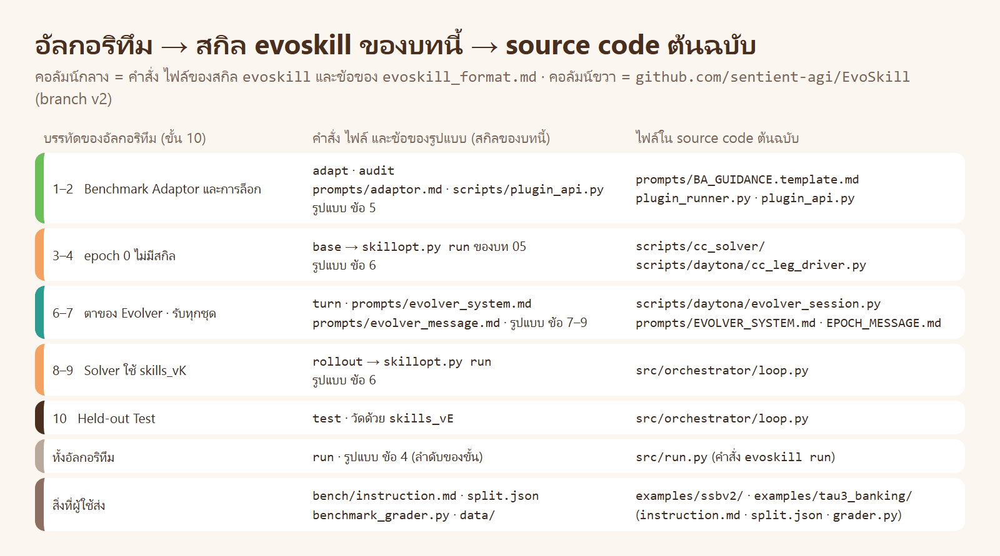
รายการไฟล์เต็มอยู่ในข้อ 15.4 ของ 01_theory/README.md · source code ต้นฉบับ: github.com/sentient-agi/EvoSkill (branch v2)
LAB ของเราตรงกับเปเปอร์ 8 ชิ้นส่วน
คำสั่งของผู้ใช้
ในเปเปอร์: ข้อความ 5 หัวข้อ (Appendix 3–4)
ใน LAB ของเรา: bench/instruction.md 5 หัวข้อ
ตัวตรวจ
ในเปเปอร์: grade(task, snapshot) → 0 ถึง 1
ใน LAB ของเรา: bench/benchmark_grader.py สัญญาเดียวกัน
Benchmark Adaptor
ในเปเปอร์: Claude Code 1 เซสชัน → plug-in + reference → ล็อกด้วย hash
ใน LAB ของเรา: คำสั่ง adapt (รูปแบบ ข้อ 5)
Evolver
ในเปเปอร์: เซสชันเดียว · --session-id แล้ว --resume · ปิด WebSearch และ WebFetch
เครื่องของ Evolver
ในเปเปอร์: 7 โฟลเดอร์ใต้ /evo (Table 1)
ใน LAB ของเรา: 7 โฟลเดอร์ใต้ /evo ชื่อเดียวกัน
ขนาดของการรัน
ในเปเปอร์: 3 epochs · 3 samples per task
ใน LAB ของเรา: เหมือนกัน
กติการับสกิล
ในเปเปอร์: รับทุก epoch · ทดสอบชุดสุดท้าย
ใน LAB ของเรา: เหมือนกัน
การตั้งค่า 2 แบบ
ในเปเปอร์: Fine-grained Ground Truth · Pass or Fail Only
ใน LAB ของเรา: e1 · p1
LAB ต่างจากเปเปอร์ 9 หัวข้อ และทุกข้อมีเหตุผล (1/2)
การแยกเครื่อง
เปเปอร์และ source code ต้นฉบับ: เครื่อง Daytona · container 1 ตัวต่อ 1 rollout
LAB ของเรา: container เดียว · Adaptor และ Evolver ถูกแยกด้วย mount namespace
เหตุผลของ LAB: รันได้บนเครื่องของผู้เรียน
เครือข่าย
เปเปอร์และ source code ต้นฉบับ: ปิด เหลือเฉพาะ API ของโมเดล
LAB ของเรา: ไม่ได้ปิด (ปิดเฉพาะเครื่องมือค้นเว็บ)
เหตุผลของ LAB: container ของ LAB ใช้ร่วมกับงานอื่น
การส่งสกิลให้ Solver
เปเปอร์และ source code ต้นฉบับ: .claude/skills/ + Progressive Disclosure
LAB ของเรา: ./skills/ และพรอมต์บอกให้อ่าน
เหตุผลของ LAB: ใช้ Solver ตัวเดียวกับบท 05 และ 06 เพื่อเทียบผล
คะแนน
เปเปอร์และ source code ต้นฉบับ: ผ่านหรือไม่ผ่าน (all-or-nothing)
LAB ของเรา: สัดส่วนของข้อตรวจ 10–11 ข้อ · รายงาน pass@1 ควบคู่
เหตุผลของ LAB: ใช้ตัวตรวจชุดเดียวกับบท 05 และ 06
จำนวนโจทย์
เปเปอร์และ source code ต้นฉบับ: 218 และ 70
LAB ของเรา: 9 (train 4 · validation 2 · test 3)
เหตุผลของ LAB: 1 การรันจบในราว 7–16 นาที
LAB ต่างจากเปเปอร์ 9 หัวข้อ และทุกข้อมีเหตุผล (2/2)
เวลาต่อตาของ Evolver
เปเปอร์และ source code ต้นฉบับ: 2 ชั่วโมง
LAB ของเรา: 30 นาที (ใช้จริง 0.1–4.6 นาที)
เหตุผลของ LAB: งานเล็ก
prompt
เปเปอร์และ source code ต้นฉบับ: ภาษาอังกฤษ (Appendix 2, 5, 6)
LAB ของเรา: เขียนใหม่เป็นภาษาไทยด้วยถ้อยคำของบทเรียน + 1 บรรทัด "เขียนสกิลเป็นภาษาไทย"
เหตุผลของ LAB: ผู้เรียนอ่านสกิลและ prompt ได้
การตรวจ plug-in
เปเปอร์และ source code ต้นฉบับ: รันใน sandbox (python -I -S)
LAB ของเรา: ตรวจรายการ import ด้วย ast แล้วรันปกติ
เหตุผลของ LAB: ย่อให้อ่านง่าย
ขนาดโค้ด
เปเปอร์และ source code ต้นฉบับ: loop.py 7,423 บรรทัด + โค้ดของ Daytona
LAB ของเรา: scripts/evoskill.py ไฟล์เดียว 1,606 บรรทัด (สร้างจากพรอมต์ของ LAB 0.1)
เหตุผลของ LAB: ใช้ไลบรารีมาตรฐานอย่างเดียว ให้ผู้เรียนสร้างเองได้ในบทเรียน
เห็นเฉลยของ Training ได้ผลดีกว่าเห็นแค่คะแนน: Test 83.3% เทียบ 70.0%ผลจริง runs/
e1 · Evolver เห็นเฉลยของ Trainingp1 · Evolver เห็นแค่คะแนนสิ่งที่เปเปอร์บอก เกิดซ้ำใน LAB ของเรา (1/2)ผลจริง runs/
ไม่มีสกิล พลาดแล้วมักพลาดซ้ำ
เกิดใน LAB: epoch 0 ของ e1 ไม่มี rollout ใดผ่านครบทุกข้อ (0/27) และพลาดข้อตรวจชุดเดิม (ทั้ง 12 การรัน 0/324)
Agent ที่มี bash ทดสอบคำอธิบายก่อนเขียน
เกิดใน LAB: e1 ตาที่ 2 และ 3 (ขั้น 9.2)
เห็นเฉลยของ Training ได้ผลดีกว่าเห็นแค่คะแนน
เกิดใน LAB: Test: e1 83.3% เทียบ p1 70.0% (p2 56.7%)
ทุก epoch ถูกรับ และ epoch สุดท้ายไม่ได้ดีที่สุดเสมอ
เกิดใน LAB: h1: Validation 53.3% → 70.0% → 60.0% → 60.0% · p1: 43.3% → 31.7% → 43.3% → 70.0% (epoch 1 ต่ำกว่าไม่มีสกิล แต่ถูกใช้ทั้ง epoch)
ต้นทุนของ Evolver ต่ำ
เกิดใน LAB: 3 ตารวม $0.22–$0.73 ต่อการรัน (e1 $0.57)
สิ่งที่เปเปอร์บอก เกิดซ้ำใน LAB ของเรา (2/2)ผลจริง runs/
ผู้ปรับสกิลที่เห็นแต่คะแนน อาจปรับไปในทางที่ผู้ใช้ไม่ตั้งใจ
เกิดใน LAB: p2 ตาที่ 3 ทดลองวิธีปัดเศษต่างกันตามชนิดงาน (รวมถึงเงินคืนปัดลง) และชุดทดลองนั้นถูกวัด Test: 56.7% ต่ำกว่า Validation ของตัวเอง 13 จุด
โมเดลเล็กปรับสกิลของตัวเองได้
เกิดใน LAB: ได้บางส่วน: h1 (haiku ทั้ง Solver และ Evolver) Test 53.3% → 62.2% · h2 55.6% → 71.1% · ต้นทุนของ Evolver $0.22 และ $0.29 · ไม่พบโหมดรันเป็นโปรแกรม (CLI) และไม่เขียนนโยบายธุรกิจลงสกิล (policy ผ่าน 0/6)
ประตูรับแบบวัดครั้งเดียวตัดสินตามโชค
เกิดใน LAB: n1 ชุดสกิล v1 v2 v3 เหมือนกันทุกไบต์ แต่ประตูแบบวัดครั้งเดียวบน Validation จะ "รับ" v1 → v2 3 จาก 9 คู่ และ v2 → v3 4 จาก 9 คู่ (ต่ำกว่า 1 คู่) · ชุดนั้นได้ Test 93.3%
สองเรื่องที่ต้องอ่านอย่างระวัง: เซสชันเดียว และกฎเฉพาะงานในเฉลยผลจริง runs/
เซสชันเดียวดีกว่าเริ่มใหม่ทุกรอบ
เกิดใน LAB: ไม่เห็นในโจทย์นี้: f1 f2 f3 (เริ่มใหม่) 83.3% · 85.6% · 93.3% · e1 e2 v1 (เซสชันเดียว) 83.3% ทั้ง 3 การรัน
(เปเปอร์ไม่ได้ทดลอง) เฉลยมีกฎเฉพาะงานปนอยู่
เกิดใน LAB: Evolver พบนโยบายธุรกิจจากเฉลยใน 7 จาก 8 การรันของ sonnet ที่เห็นเฉลย (policy ผ่าน 6/6 ภายใน epoch 2) แต่ขยาย "เงินคืนปัดลง" เป็นกติกาทั่วไป (11 จาก 12 การรัน) งานคืนเงินคอร์สของ Test จึงปัดเศษผิด 3/3 ในการรันเหล่านั้น และไม่มีประตูรับกันไว้ (ขั้น 9.4)
ตรวจความเข้าใจ ข้อ 1–5
1 ข้อสังเกตใดเป็นฐานของการปรับสกิล และมันบอกอะไร
Agent ที่ไม่มีสกิลซึ่งพลาดโจทย์ มักพลาดโจทย์นั้นอีกเมื่อทำซ้ำ · การพลาดซ้ำบอกว่าสาเหตุคือการขาดคำแนะนำอย่างสม่ำเสมอ ไม่ใช่ความบังเอิญ และคำแนะนำเป็นสิ่งที่ Agent อีกตัวเขียนให้ได้ (ขั้น 1)
2 EvoSkill v2 เปลี่ยนอะไร 2 อย่างจาก v1
รวม Proposer กับ Generator เป็น Evolver ตัวเดียวที่อยู่ตลอดการรัน และเพิ่ม Benchmark Adaptor ที่แปลงคำอธิบาย benchmark เป็น plug-in กับ Reference Folder (ขั้น 3)
3 ทำไม Benchmark Adaptor กับ Evolver ต้องเป็นคนละ Agent
Agent ที่ทั้งกำหนดการวัดและถูกวัด ทำคะแนนขึ้นได้โดยเปลี่ยนการแบ่งชุดหรือเปลี่ยนสิ่งที่ตัวเองเห็น แทนการเขียนสกิลให้ดี · การแบ่งชุดจึงถูกล็อกโดยอีก Agent หนึ่งก่อนมีสกิลตัวแรก (ข้อ 11.5)
4 การกันข้อมูลรับประกันอะไร และไม่รับประกันอะไร
รับประกันว่าคะแนนไม่ได้มาจากการอ่านคำตอบของชุดที่เก็บไว้ · ไม่รับประกันว่าคะแนนที่สูงขึ้นหมายถึงสกิลที่ดีขึ้น เพราะตัวตรวจเองอาจมีช่องโหว่ (ขั้น 8)
5 ทำไมประตูรับที่วัดโจทย์ละครั้งจึงเชื่อไม่ได้
โจทย์ 7%–53% ผ่านบางครั้งพลาดบางครั้ง · การปฏิเสธทุกครั้งของ SkillOpt และ SkillBoost ต่างกันไม่เกิน 2 โจทย์ ซึ่งน้อยกว่าจำนวนโจทย์ที่ผลแกว่ง การตัดสินจึงขึ้นกับว่าสุ่มได้ rollout ครั้งใด (ข้อ 11.3 และ 11.4)
ตอบเองก่อน แล้วคลิกที่คำถามเพื่อดูคำตอบ
ตรวจความเข้าใจ ข้อ 6–9
6 ถ้ารับทุก epoch แล้วการแก้ที่ผิดถูกจัดการอย่างไร
Evolver มีสกิลและ rollout ของทุก epoch · rollout ของ epoch ถัดไปแสดงว่าการแก้นั้นทำอะไรแย่ลง ตาถัดไปจึงย้อนกลับหรือผสมกับรุ่นก่อนได้ · ข้อยกเว้นคือตาสุดท้าย ซึ่งไม่มีตาถัดไปให้แก้ (ข้อ 11.4)
7 ความจำของ Evolver มีกี่ชั้น และทำไมต้องมีโฟลเดอร์ส่วนตัว
3 ชั้น: บริบทของเซสชัน · โฟลเดอร์ส่วนตัว · โฟลเดอร์ของทุก epoch · บริบทของเซสชันอาจถูกย่ออัตโนมัติเมื่อยาวเกินไป สิ่งที่เขียนลงไฟล์ไม่หาย (ขั้น 7)
8 ในการรัน e1 ทำไม Evolver ที่เห็นเฉลยยังติดที่ 90%
ข้อตรวจที่เหลือคือ "ต้องส่งไฟล์เทสต์อย่างน้อย 6 เทสต์" ซึ่งเป็นกฎของตัวตรวจ · Evolver ได้แต่คะแนน ไม่เห็นข้อความของตัวตรวจ และโค้ดของ Solver ก็ทำงานเหมือนเฉลยแล้ว จึงไม่มีหลักฐานชี้ไปที่ไฟล์เทสต์ · ตาที่ 3 เดาว่าไฟล์เทสต์ของ Solver ชนกับเทสต์ของผู้ตรวจ จึงให้ย้ายออกจากโฟลเดอร์งาน ซึ่งผิดทาง (ขั้น 9.3 และข้อ 11.6)
9 ต้นทุนที่เปเปอร์รายงานไม่รวมอะไร
ไม่รวม rollout ของ Solver · EvoSkill v2 ให้ Solver ทำโจทย์ Training และ Validation ข้อละ 3 ครั้งทุก epoch ซึ่งในการรันของเราเป็นต้นทุนส่วนใหญ่ ($8.81 เทียบกับ Evolver $0.57)
ตอบเองก่อน แล้วคลิกที่คำถามเพื่อดูคำตอบ
ต่อไป: ลงมือทำใน LAB
ภาคปฏิบัติ: สไลด์ของบท (LAB) · README หลัก: ภาค LAB · เครื่องมือ: สกิล evoskill · รูปแบบของสกิล (evoskill_format.md)
รายละเอียดเต็มของทฤษฎี: 01_theory/README.md · เปเปอร์: arXiv:2610.25931 · source code: github.com/sentient-agi/EvoSkill